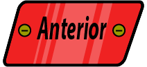
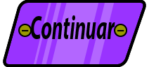

| Menú principal | |
| Botón principal: Clic para ir a la pantalla principal de la aplicación. | |
| Botón historietas: Al hacer clic, se desglosará las dos categorias (niños y jóvenes); luego si hace clic en alguna categoria se desglosará el contenido. Se presentan 6 historietas en total. | |
| Botón videos: Al hacer clic, se desglosará las dos categorias (niños y jóvenes); luego si hace clic en alguna categoria se desglosará el contenido. Se presentan 11 videos en total. | |
| Botón minijuegos: Al hacer clic, se desglosará las dos categorias (niños y jóvenes) Se presentan 20 minijuegos en total. | |
| Botón test: Al hacer clic, se desglosará las dos categorias (niños y jóvenes); luego si hace clic en alguna categoria se desglosará el contenido. Se presentan 4 test y 40 preguntas en total. | |
| Botón herramientas: Al hacer clic, se desglosará los botones generales de la aplicación. Se presentan 4 herramientas. | |
| Pantalla de las historietas | |
|  | Botón Anterior: Durante la visualización de alguna historieta, podrá ir a la página anterior de la misma. |
| Botón Siguiente: Durante la visualización de alguna historieta, podrá ir a la página siguiente de la misma. | |
| Botón Si: Durante la visualización de alguna historieta, al presentarse una pregunta, podrá elegir "Si" para ver el efecto o las consecuencias que conlleva al seleccionar dicha opción. | |
| Botón No: Durante la visualización de alguna historieta, al presentarse una pregunta, podrá elegir "No" para ver el efecto o las consecuencias que conlleva al seleccionar dicha opción. | |
| Pantalla de las minijuegos | |
| Botón Menú: Activa/Desactiva la pausa del juego, al activarla podrá ir a la Pantalla Pausa de los minijuegos. (En esta opción se muestra la ayuda especifica de los mijuegos) |
|
| Pantalla del test | |
|  | Botón Continuar: Permite avanzar hacia la siguiente pregunta. Si se equivoca, no se presentarán las respuestas correctas; solo en los minijuegos podrá observarse las respuestas correctas. |